RSIGuard's main display gives you easy access to each of the program's main features.
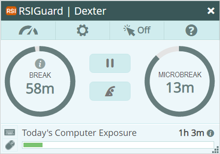
If the window is too small or or too large, you can adjust the size by pressing Ctrl+Minus and Plus (the and
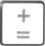
keys).At the top, there are 4 buttons.
Data Menu button – Clicking this button (or pressing Alt+D) presents you with a menu of options for accessing your RSIGuard data. The specific options depend on your RSIGuard configuration. If you are connected to Cority Online Ergonomics, clicking this button will bring you to your Cority Dashboard. In that case, holding the CTRL key and clicking on it will let you view the menu of options.
Tools Menu button – Clicking this button (or pressing Alt+T) presents you with a menu of RSIGuard Tools. The specific options depend on your RSIGuard configuration. Holding CTRL while clicking on the Toolgear will show some additional options.
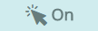
AutoClick button – Clicking this button toggles the AutoClick feature. Click here to learn more about AutoClick.Help Menu button – Clicking this button (or pressing Alt+H) presents you with a menu of RSIGuard support/help options.
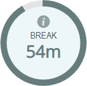
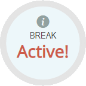
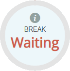
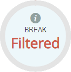
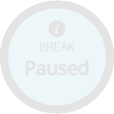
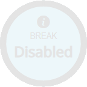
This information area shows when your next break is predicted to be needed (for example, in 45 minutes). As you continue to work, the outer ring of dark green shrinks as breaktime gets closer. When you take natural rests, the "time until next break" may increase and the dark green ring grows to indicate this. The actual algorithm for when your next break occurs includes many factors, and the estimated time is updated every few seconds. Click here to learn more about BreakTimer timing.
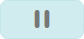
button.The Break Info window helps you understand when and why a break is (or is not) coming.
To view it, click the Information button (in the center of the BreakTimer dial).
The Break Info window then displays your last break, next break, and break compliance information:
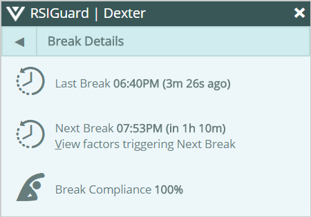
Click View factors triggering Next Break to see a detailed view of the algorithm that estimates when the next break suggestion will occur. This includes break factors such as exposure, time, filters, and limits.
Click the back button to return to the regular main window view.
To learn more about the BreakTimer feature and how to configure it, visit BreakTimer help.
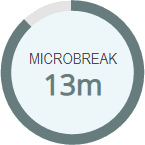
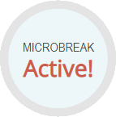
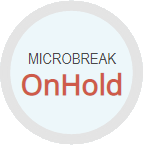
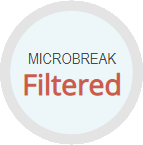
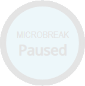
This information area shows when your next ForgetMeNot or Microbreak occur. The estimate updates every few seconds based on how you've been working/resting.
To learn more about ForgetMeNots and Microbreaks, visit the ForgetMeNot feature help.
The Pause button lets you pause the BreakTimer and ForgetMeNots or Microbreaks features so that no breaks are shown. When you click , you are prompted to select when you'd like RSIGuard to turn breaks back on:
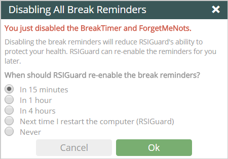
Select the desired choice. Some options may not be available if your organization has limited your choices to encourage breaks.
The Take a Break Now
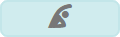
button is useful if you feel tired and want to take a stretch break before it is suggested, or want to prevent a break later (for example, you'll be busy soon) by taking it sooner. Click to start a break immediately.Keyboard and Mouse Activity
The
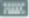
and icons flash green to indicate typing and/or mousing activity. The DataLogger, BreakTimer and ForgetMeNots use this activity to record activity levels, identify risk, and schedule when break suggestions are given.The Computer Exposure information area shows an exposure score based on how much you've worked vs. how well you've taken breaks. In general, a lower score is better (indicated by fewer bars that are green). More activity and insufficient rest add bars (eventually changing from green to amber to red) indiciating greater risk.
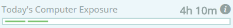
The time indicator (for example, 4h 10m) tells how much time you've been working today ( 4 hours, 10 minutes).
Clicking the Information button switches the main window to show exposure detail:
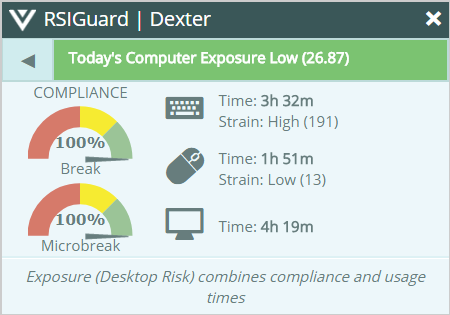
This view shows break and microbreak compliance meters (with numerical indicators), time and "strain exposure" values for both keyboard and mouse usage, and overall computer usage time.
Strain is a measurement of the estimated muscle strain associated with the activity you performed (for example, moving the mouse adds a little strain and clicking the mouse adds more).
Total computer time is the amount of time you were using either the mouse or the keyboard, or both (within a 30 second period). Since you often use both, total computer time is normally not the sum of keyboard and mouse time.
Click the Back button to return to the regular main window view.
To learn more about the strain measurement, read Cumulative strain exposure from using keyboard & mouse in the DataLogger Analysis Whitepaper.